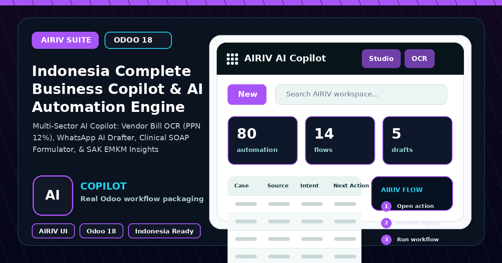

AIRIV Intelligence Layer for Odoo
Cross-sector Odoo 18 workspace for document OCR, business drafting, clinical SOAP structuring, and Indonesian financial insight workflows with explicit offline and hosted execution modes.

AIRIV Business Copilot brings assisted intelligence into native Odoo workflows while keeping execution mode visible and configurable for portfolio, sandbox, or controlled deployment use.
Document OCR
Capture structured supplier, tax, and line-item data from business documents through the OCR wizard workflow.
Business Drafting
Prepare context-aware replies and operational summaries for customer, order, and invoice conversations.
Clinical Structuring
Turn anamnesis notes into a reviewable clinical SOAP draft with diagnostic coding assistance.
Open Copilot Configuration and select Offline Mock, Google AI Studio, or Vertex AI according to the deployment policy.
Select the document, conversation, or clinical note and confirm the business context before requesting assistance.
Run the appropriate wizard or interaction action and review the generated result in the traceable interaction record.
Treat every output as a draft: review, edit, and apply it to the target Odoo workflow only after human verification.
Native Odoo Business Context | |-- account.move and stock context |-- AIRIV WhatsApp and Clinic context v Copilot Configuration | |-- execution mode |-- model and prompt policy |-- audit and interaction trace v AIRIV Intelligence Workflows | |-- document OCR wizard |-- business reply drafting |-- SOAP and ICD-10 assistance v Human Review Gate | |-- edit draft |-- approve and apply |-- retain interaction history
| Odoo version | 18.0 Community |
|---|---|
| Module name | airiv_business_copilot_indonesia |
| Version | 18.0.1.0.0 |
| License | LGPL-3 |
| Author | AIRIV |
| Odoo dependencies | base, account, stock, sale, AIRIV OS Core, WhatsApp, Clinic, and Accounting modules |
| Main models | ai.copilot.config, ai.copilot.interaction, and ai.document.ocr.wizard |
| Execution modes | Offline Mock Simulation, Google AI Studio Direct API, and Google Cloud Vertex AI configuration surfaces |
| Governance | Traceable interactions, explicit mode selection, and human review before business application |
| Dependencies | base, account, stock, sale, airiv_whatsapp_indonesia, airiv_clinic_indonesia, airiv_accounting_indonesia, airiv_os_core |
| Store assets | icon.png, banner.png, index.html |
Install
Clone branch 18.0, place the module and declared AIRIV dependencies on the addons path, restart Odoo, update the apps list, and install.
Configure
Open Copilot Configuration, choose the permitted execution mode, and review model and prompt settings.
Operate
Launch OCR or drafting workflows, review the traceable result, then apply approved output to the relevant Odoo record.
| Dependencies | Install the declared AIRIV and Odoo business dependencies before activating the copilot. |
|---|---|
| Mode policy | Use Offline Mock for demonstrations and configure hosted modes only under the organization security policy. |
| Human review | Do not treat generated output as automatically authoritative; verify tax, clinical, and customer-facing content. |
| Traceability | Retain interaction records and review prompt, mode, status, and output before applying changes. |
| Author | AIRIV |
|---|---|
| Website | https://airiv.id |
| GitHub | https://github.com/arivonto |
| Module repository | https://github.com/arivonto/airiv_business_copilot_indonesia |
| Odoo series | 18.0 |
This package includes Apps Store assets, parseable manifest metadata, installation documentation, configuration guidance, and GitHub Actions audit coverage for branch 18.0.